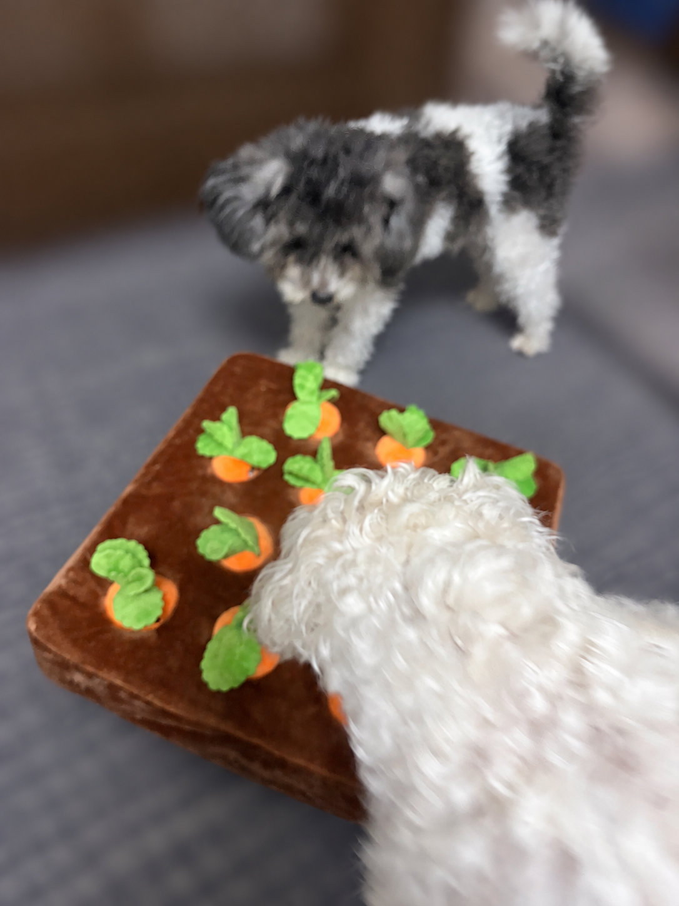
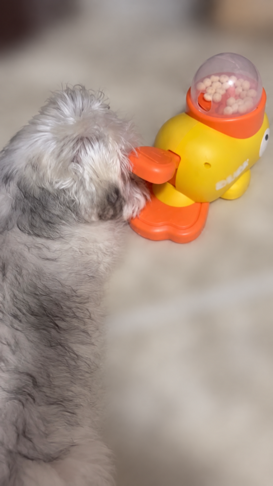
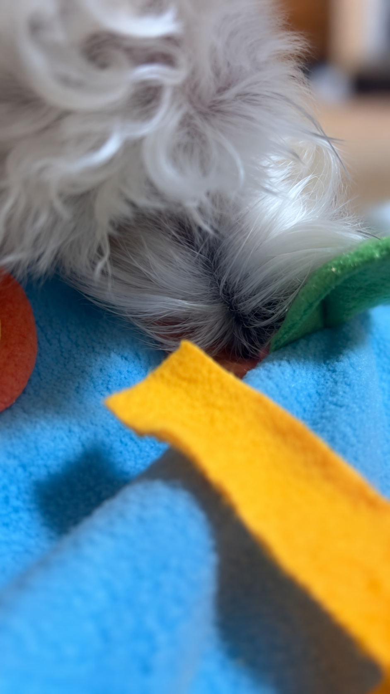

雨の日、犬とおうちで何する？すいとおん家は、ノーズワークを取り入れつつ、家でも全力で遊びます。笑
おでかけできない日も、ふたりといっしょに楽しめることを。うちで使っている遊びと、次に試したいアイデアをまとめました。
01 / OUR LITTLE DAYS
うちは、ノーズワークから。
にんじんのおもちゃや布のマットを使って、鼻を使う遊びを取り入れています。写真はおうちで遊んでいるすいとおん。いつもの部屋も、おもちゃをひとつ出すと遊び場になります。

初めてなら、ごはんを見つけやすい位置に少量置くところから。難しく隠すより、「見つけられた！」で終われるくらいが始めやすそうです。


02 / PLAY TOGETHER
いっしょに遊ぶ時間も、たっぷり。
すいとおん家は、おうちでも全力で遊ぶ派。遊び方の候補には、お気に入りのおもちゃを使った短い引っ張りっこもあります。ときどき休憩を挟んで、犬の方からまた遊びたくなるペースで。
滑りやすい床はマットを敷き、家具にぶつからないスペースで。おもちゃを高く振って飛びつかせたり、階段で走らせたりせず、足元で遊べる形にします。
03 / A FEW MORE IDEAS
次は、こんな遊びも。
お気に入りのおもちゃを探す
まずは見える場所に置いて、一緒に「どこかな？」。見つけたら褒めて、一緒に遊ぶところまでをセットに。慣れたら、探す範囲を少しだけ広げます。
おいで、できた！の小さな練習
同じ部屋の近い距離で名前を呼んで、来られたら褒める。すでに知っている合図を数回楽しむだけでも、飼い主と関わる時間になります。飽きる前に切り上げて休憩へ。
遊んだあとは、何もしない時間
ずっと楽しませ続けなくても大丈夫。いつもの落ち着ける場所で、ゆっくり休む時間も用意します。やりたくなさそうなら、その日はおしまいに。
外で遊びたくなったら。
雨の日でも出かけたい日は、室内ドッグランという選択肢も。登録や予約を先に確認して、無理なく行ける場所を探してみてください。
関東の室内ドッグラン特集へ →写真・日常の体験：すいとおん家。追加の遊び方は Dogs Trustのエンリッチメント案内、AKCの室内の嗅覚遊びを参考に整理しています。追加アイデアは、すいとおん家の実践済み体験を示すものではありません。